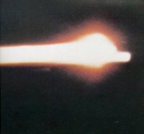
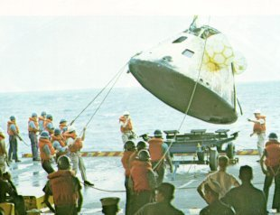
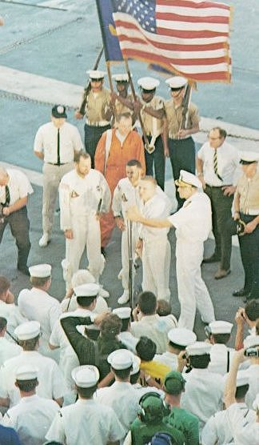

|  | Blazing across the sky, the Apollo 8 command module returns home. A Pan-Am pilot on his way to Honolulu from Fiji glimpsed the sight, and estimated that the fiery streak was as much as 125 miles long. The glowing tail made the spacecraft look like a meteor. This unusual photo was taken by a special USAF camera on a KC-135 aircraft at 40,000 feet. |
|  | Charred and dripping, the Apollo 8 command module is hoisted from the Pacific and eased down an its trailer aboard the USS Yorktown. Its remaining propellants have to be drained off and its precious film magazines recovered. Then spacecraft engineers will go over it carefully to study the effects of a trip around the Moon. |
|  | An early-morning reception took place aboard the USS Yorktown in the Pacific on December 27, 1968. At left, Apollo 8 Commander Frank Borman thanked the crew for giving up Christmas at home so that the carrier could serve as the prime recovery ship. Astronauts Lovell and Anders stood beside Borman. |